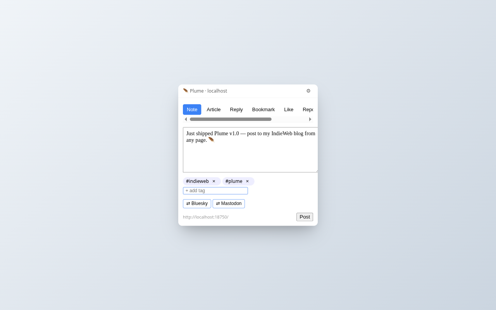
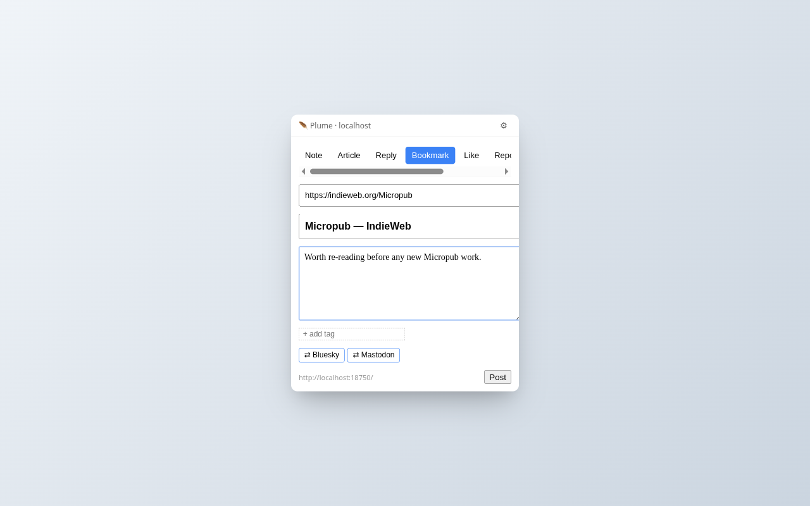
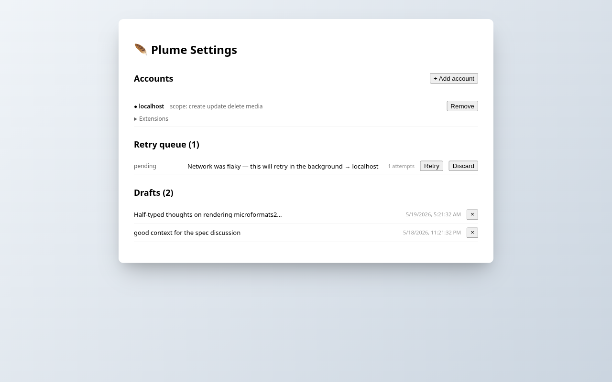
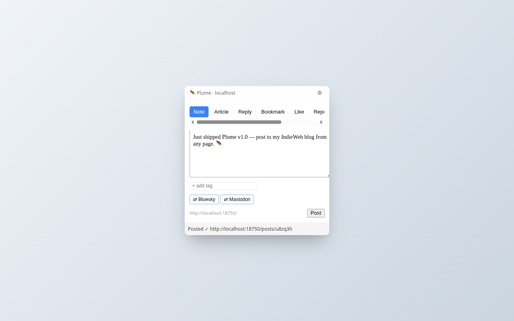

Capture from anywhere you read
Plume lives in the toolbar and in the right-click menu. Every kind of post the IndieWeb knows about — notes, articles, bookmarks, replies, likes, reposts, quotes, photos — is one click away.

Quick composer
Click the toolbar feather. Type. Pick tags. Choose where to syndicate. Post. The whole loop takes ~5 seconds and never leaves the page you were reading.

Right-click to bookmark, reply, quote, like
Right-click any page, link, image, or text selection. Plume opens with the right fields pre-filled — URL of what you're bookmarking, page title, the passage you highlighted as a Markdown blockquote with citation.

Drafts, retry queue, multi-account
Auto-save while you write — drafts survive across popup closes. Posts that hit a network blip get queued and retried in the background with exponential backoff. Connect multiple Micropub blogs and switch between them.

Posted, with a link back
When the server confirms, Plume shows you the URL of your new post and closes. Your content lands on your blog with whatever syndication targets and metadata you chose — exactly as if you'd posted from the admin UI.
What's inside
Everything Plume does runs in your browser. No analytics, no telemetry, no third-party hosts. The only network requests Plume makes are to the Micropub endpoints you connect.
🔐 IndieAuth + PKCE
Standards-compliant OAuth via chrome.identity.launchWebAuthFlow. Tokens
stay on your device.
🪶 Multi-account
Connect more than one Micropub blog. Switch the active account; each keeps its own drafts and queue.
💾 Draft autosave
Per-target drafts auto-save 1 second after each keystroke. Restored on next popup open. 7-day expiry.
🔁 Retry queue
Network outage? Server hiccup? Plume queues failed posts and retries with backoff (30s → 24h). Badge shows queue depth.
🎯 Narrow permissions
Install asks for nothing broad. Host permissions are requested per-account, only when you actually connect a blog.
🧩 Server-aware
Plume reads ?q=config, ?q=post-types, and
?q=category from your blog. Caches 24h.
🤖 AI metadata
Optional per-post fields disclosing AI involvement (level, tools, description). Works with any extension-aware Micropub server.
🌐 Cross-browser
One codebase, Chrome + Firefox manifests. Built on WXT + Preact + TypeScript.
For IndieAuth servers
This page is Plume's IndieAuth client_id URL. When the extension initiates
authentication, your IndieAuth server fetches this URL and reads the
<link rel="redirect_uri"> entries in the <head> to
verify the OAuth callback. Three patterns are declared:
-
https://kjfcmmliahijkokkhgellflmefpfglin.chromiumapp.org/— pinned Chrome extension ID (matches themanifest.keyfield, stable across dev installs) -
https://*.chromiumapp.org/— wildcard fallback for unpacked dev installs and the future Chrome Web Store production ID -
https://*.extensions.allizom.org/— Firefox addon callback (UUID is per-install, can't be pinned)
Indiekit servers running
@rmdes/indiekit-endpoint-auth
1.0.0-beta.31 or later support fetching this URL and matching wildcards. Other IndieAuth
servers may need to implement
redirect URL discovery
similarly.